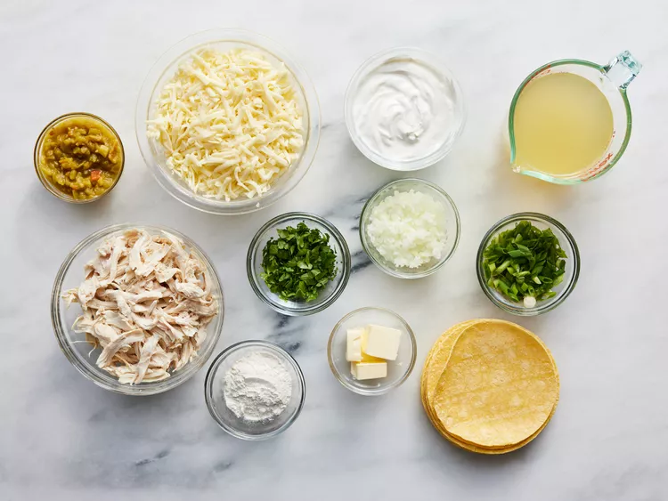
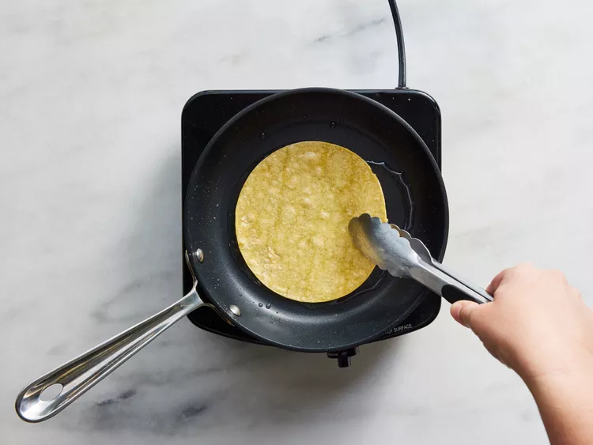
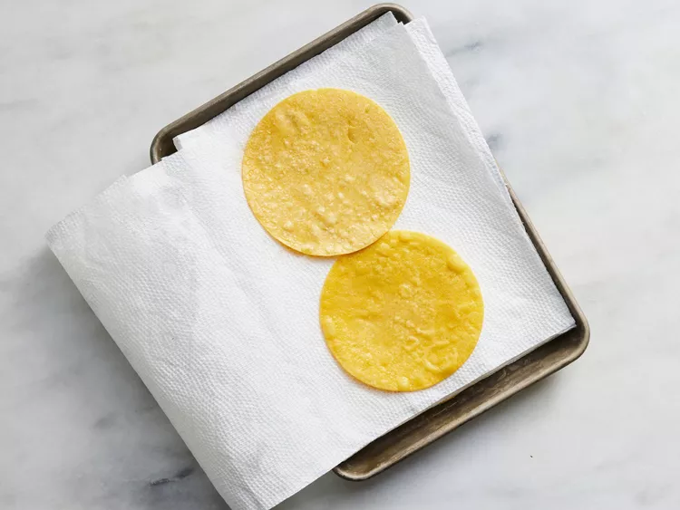
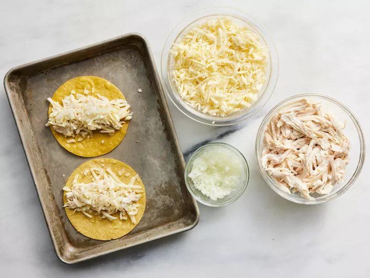
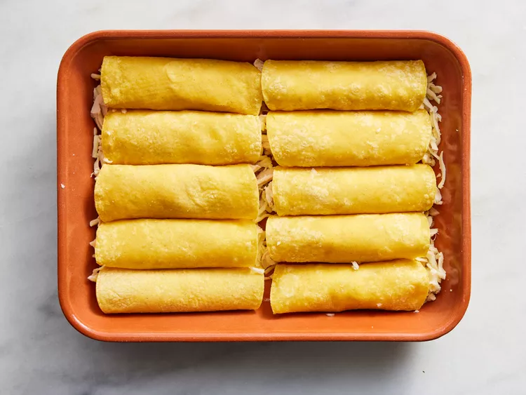
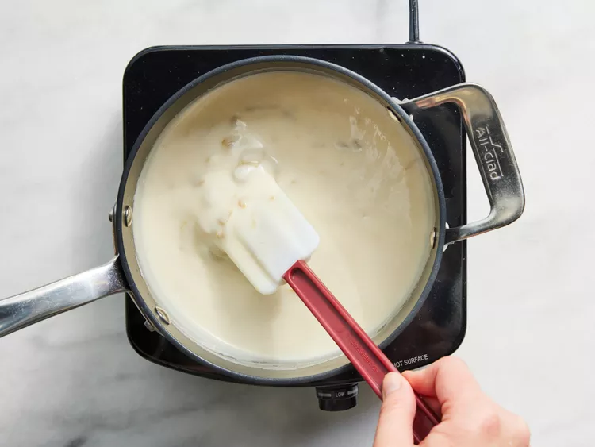
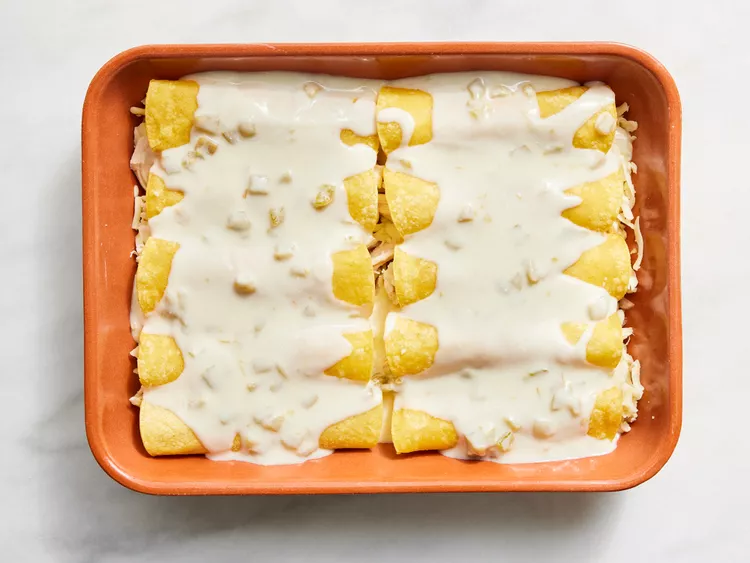

Home
Chicken Enchiladas with Creamy Green Chile Sauce

Shredded chicken and onions make the filling hearty while still feeling light and fresh. Allrecipes home cooks rave about the rich and flavorful creamy green chile sauce. It was super easy to make with clear instructions.
Ingredients
- 2 tablespoons vegetable oil, or more as needed
- 12 corn tortillas
- 3 cooked boneless skinless chicken breast halves, shredded
- 12 ounces shredded Monterey Jack cheese, divided
- ¾ cup minced onion
- ¼ cup butter
- ¼ cup all-purpose flour
- 2 cups chicken broth
- 1 cup sour cream
- 1 (4 ounce) can chopped green chiles, drained
- ½ cup chopped green onions
- ½ cup chopped fresh cilantro
Instructions
- Gather all ingredients.

- Preheat the oven to 375 degrees F (190 degrees C). Grease a 9x13-inch baking dish.
- Heat 2 tablespoons oil in a skillet over medium-high heat. Fry tortillas (one at a time) for 5 seconds on each side to soften and make them pliable. Add more oil to the pan as needed.

- Drain between layers of paper towel and keep warm.

- Divide chicken, 10 ounces Monterey Jack cheese, and onion among 12 tortillas.

- Roll up each tortilla and place seam-side down in the prepared pan.

- Melt butter in a saucepan over medium heat. Add flour and whisk until mixture begins to boil. Slowly add chicken broth, stirring with a whisk until thickened. Mix in sour cream and green chiles, stirring occasionally. Heat thoroughly but do not boil.

- Pour mixture over enchiladas.

- Bake in the preheated oven until bubbly and heated through, about 20 minutes. Top with remaining Monterey Jack cheese and bake for 5 more minutes.
- Garnish with chopped green onions and cilantro.